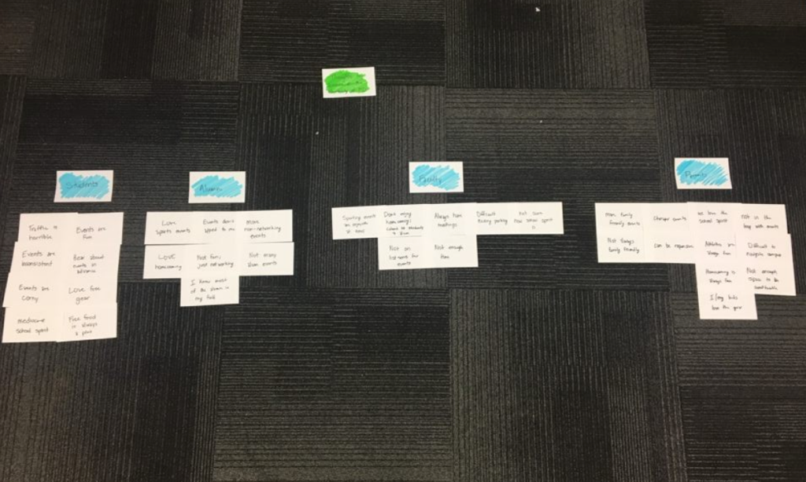
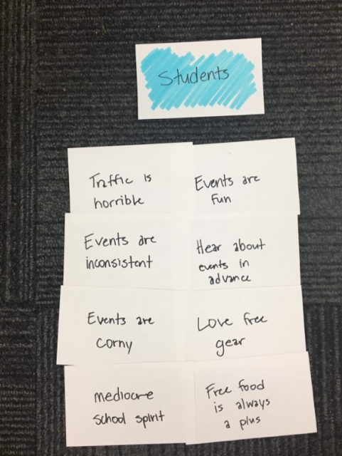
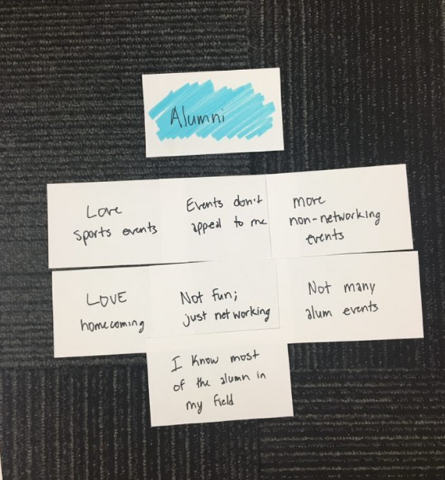
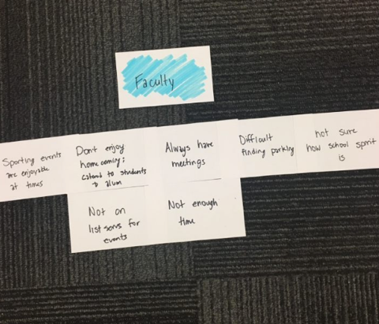
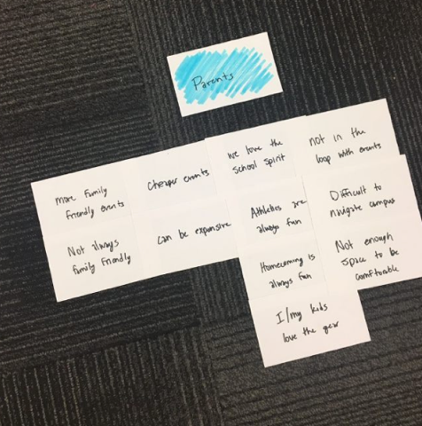
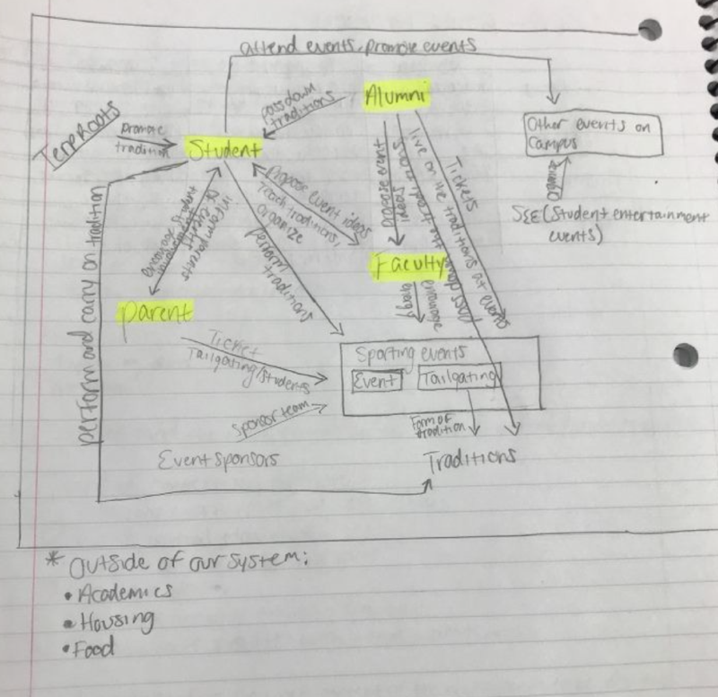
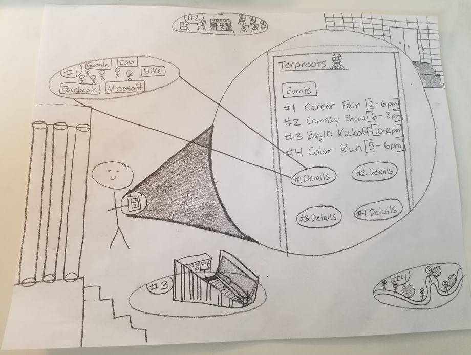
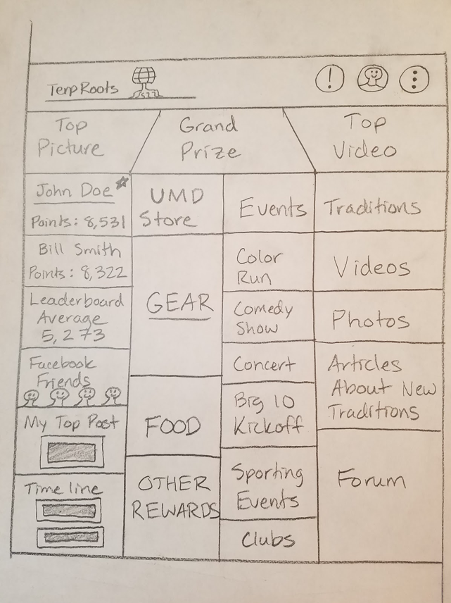
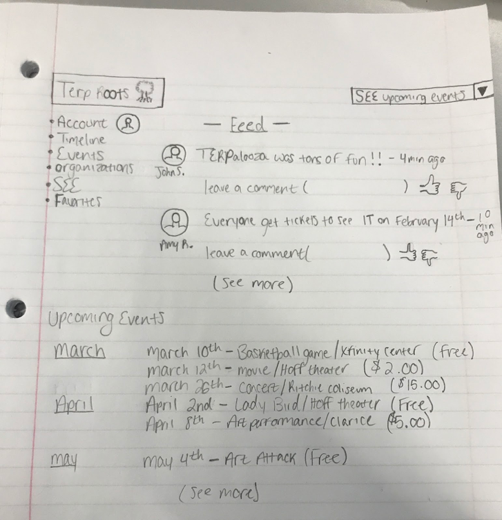

Through a virtual platform that enables our primary target audience, students, to post theme-based pictures and videos at Maryland events, TerpRoots aims to develop a friendly camaraderie between students where they are more eager to attend traditional Terp events after becoming more connected to the College Park community. We plan to incentivize posting content on the platform by awarding students with the most popular posts different things like free food vouchers, free tickets to events, free Maryland apparel, and more! As the system expands, we plan to include parents, visitors, and faculty members because everyone should be able to experience and enjoy the Terpdition (Terp tradition) experience!
Large Functionality, Limitless Fun
Check out how TerpRoots works!
Usable on Multiple Devices
Ready to use on mobile devices and on the web!
Camera Use
Take a picture using our hashtags and filters to show how excited you are for an event that is coming up!
Incentives
Most popular content creators will receive a prize at the end of the event!
Unlocking the Community
We need YOU to decide what content should be recognized for embodying our Terp spirit!
One to two weeks before an event, we will post themes, hashtags, and filters on the platform to engage with students and get them revved up for the event! The platform would be compatible with existing social media platforms: Twitter, Facebook, and Instagram. As posts are fed into the platform, students and surrounding members of the community will be able to like or vote for a post they like. As we get closer to the event, we plan on releasing what incentive the top post creators will receive. We will push out more engagement tools and set content engagement to be worth more points during the event than before the event. At the end of the event, the top posts will be announced and students, faculty, visitors, or parents who created the top posts will be able to claim their prize.
Many describe college as being the best time of their lives. It’s a time where we learn more about ourselves, figure out what we want to do professionally, and determine what is required to get there. College is a time to make an abundance of mistakes and learn from those mistakes. Additionally, and most importantly for our platform, college is a time to live life and make amazing, unforgettable memories. At the University of Maryland, there are a host of traditions that have permeated through the years and have made campus life more vibrant.
From rubbing Testudo’s nose or the Big Ten Kick Off to The Flash Mob basketball game, Homecoming, Or Art Attack, there are countless traditions that help students enjoy themselves and balance out the stresses of academic rigor. Recently, students haven’t been participating in Terp traditions. Attendance at athletic games has been lower, students have been skipping the Big Ten Kick Off, and Art Attack, or events at Homecoming, have an inconsistent number of people in attendance. With this being a high-tech generation, we believe our platform will allow revamp traditions by allowing students, faculty, visitors, and parents to engage with one another regarding these events and to incentivize attending and supporting these events.
Contextual Analysis
Analyzing our target audience
Prior to contextual inquiry, our team collaborated on creating open-ended questionnaire and outlined the questions that we hoped would best uncover and address the root problem. We also did our research and looked into potential stakeholders to interview. Organizations on campus such as SEE looked hopeful. Our focus for interviewing stakeholders centered around finding the people with connections to the school’s organizations. Our focus for interviewing our target audience was slightly more open ended, as we were able to approach fellow students, parents, and faculty. We planned to observe traditions on campus for the alloted one-and-a-half hour observation requirement. Some traditions that we wished to observe are as follows: the rubbing of Testudo’s nose, coordinated cheers from the student body at basketball games, and swimming in the fountain in front of McKeldin library.
Feedback from our audience regarding Maryland events:
“I really like the lacrosse games! We get more attention when we’re outside where it’s warm.”
“If I don’t take part in something it’s either due to distance or a commitment to other priorities.”
“Finals week at Testudo is hilarious even though I’ve never sacrificed anything, but I love the enthusiasm, creativity and humor that goes into desperation.”
“I do it for the t-shirts. Free gear. Free food.”
“They're okay. Could be more diverse.”
Work Affinity Activity Diagram





Work Flow Diagram

Personas & Design Alternatives
Persona:
The persona that we are designing TerpRoots for is a freshman who is very involved on campus in different academic societies and extracurricular activities. This freshman wants to attend more events but is unable to attend some of the most popular events because the student is very busy managing academics and their other obligations. Additionally, the student’s parents are University of Maryland alumni as well. They would love to attend traditional events with their child, but the student is really busy, so they don’t see the point of attending without their child; additionally, they have younger children and some of the events aren’t as accommodating to younger children. The student is often working through the late evening, as they are conducting undergraduate research with a faculty member in the Clark School of Engineering. The student and faculty member often talk to each other about events going on around campus, but they never go because they are really invested in their academics/research. The student always hears about events from friends and peers afterwards and is always regretful. The student is out of the loop on when events are, where they are, and other pertinent information, so the student exerts copious amounts of energy into other things to hide the FOMO (fear of missing out). When looking at our WAAD, we realized that many students are unable to attend events due to academic, extracurricular, or professional obligations and they live vicariously through their peers’ postings on different social media platforms. Additionally, we learned that many of the current students’ parents are alumni of Maryland and love to come back to events as well. We tried to incorporate as many work roles as possible in our persona by allowing the main persona, the student, to interact with people of differing work roles like faculty and alumni.
Design Methodology:
Our design methodology pulls from the three design paradigms of human information processing, design-thinking and engineering. Primarily our focus is on the first two paradigms, but there will be points where the engineering paradigm will be applicable. For instance, if we were to be analyzing the utility of our system we would pay close attention to the engineering perspective.
Seeing as The UX Book teaches that “everything is design,” this phase of our life-cycle must be immersive, integrative, human centered and market oriented. The design phase is an art form. This being the case, we must balance all three perspectives of design, namely ecological, interaction and emotional.
We started our design process by first identifying our primary persona: active freshman at the University of Maryland. Our secondary personas must fit each work role and should be “rich, relevant, believable, specific, and precise.”
Then we began the next stage in design: ideation. It is important that we distinguished between idea creation and critiquing. We wanted to “iterate to explore” and felt that we would have better results if we abided by no “established methods.” We setup our work spaces for the separate phases of ideation, individual work and group work. Soon after, we assembled our team, used ideation bins to get started which allowed us to gather work activity notes, and then we brainstormed. We initially had an overview discussion where we established some ground rules, then divided our five team members into two groups, one group of two people and the other with three. Each group went through their own creative process before we reconvened as a whole. Following our reunion, we began to critique our content.
Next was the process of sketching, which is the “rapid creation of freehand drawings expressing preliminary design ideas focusing on concepts rather than details.” According to Hartson and Pyla, “sketching is essential to design” and should be a “visual medium for exploration.” When making the sketches below, our team abided by the design principle that states that a sketch is in a sense a conversation between the designers and the solution. We believed that we should focus on the experience rather than the product. It is important to note that this stage is not the same as prototyping, so we did not implement our designs. This is where we got to invent. After gathering supplies, we made sure that we used the “language of sketching” by working quickly and using roughed-in lines and ambiguity to leave gaps in the imagination. Our three-dimensional sketching helps us visualize the companionship between our solution and the ideal persona. This companionship is the root of the phenomenological impact.
The Designs:

The photo above shows a more basic user interface for our application. In this example, it shows the events page that features a list of various campus events and the respective times for each event. The most innovative aspect about this design is that these events are linked directly to their real time activities. In this example, the student can view live updates about events such as the career fair, comedy show, Big 10 Kickoff and the Color Run by clicking on the details button that corresponds with the event number.
Event variety, location and updates are the requirements that are fulfilled within this sketch. The variety requirement is met by providing the student with a list of the current and upcoming campus events. We provide the location of each event by giving directions to the event and showing a preview of the event’s specific location. Users are updated on the most current events through live updates by fellow students and possibly event staff.

This second design is a possible mock-up of the main user interface for the TerpRoots application. This design features a more social approach as it allows users to interact with other people. This interface would act as a forum for students to communicate with each other about the quality of events and also feature things such as a live feed of user posts, an incentive/reward system based on both the quality and amount posts by individual users, and event and product advertisements.
This main user interface meets five requirements: incentives, inclusion, event variety, advertisement and update. The interface shows the variety of incentives that can be won by making posts on the interface in the middle left portion of the screen. We address the inclusion requirement by focusing on how we disseminate event information. We can reach a larger audience by disseminating the information through various platforms such as Twitter, Facebook, and Google Plus to name a few. Physical promotional materials that are usually posted around campus can be uploaded directly to the TerpRoots platform for users without social media, so they can be effectively informed as well. These physical promotional materials will be uploaded onto the TerpRoots platform when users take pictures of flyers or event information that they see around campus. Event variety is shown as a list of current and future events available on campus in the middle right column. The list of campus events also fulfills the advertisement requirement. We also advertise user content such as the top user posts of the day for both images and video that were uploaded to TerpRoots. Through the implementation of real-time posts by users that can be viewed by other members of the TerpRoots community, the updates requirement is certainly fulfilled.

This final design shows also shows a very social design of our system and the ability it allows users communicate with each other about previous, current, and upcoming events. People will be able to post information about different events and communicate with their fellow TerpRoots users by leaving comments on other users’ posts. These posts will also feature timestamps to show relevancy in respect to real time as well and like/dislike buttons. In addition, featured on the left-hand side of this mock-up is a menu that allows you to filter through different parts of the platform such as personal information, user posts, and lists of the events offered and campus organizations and the events that they host. Another benefit of this design is that it prominently features an upcoming events calendar for users to see what events will be taking place in the near future.
This interface meets the pricing requirement because the event cost is displayed upfront and allows users to prominently see whether they would consider attending a certain event before reading its details based on the price. It is also convenient because it informs/reminds you of the date of the event and where on campus it is being held.